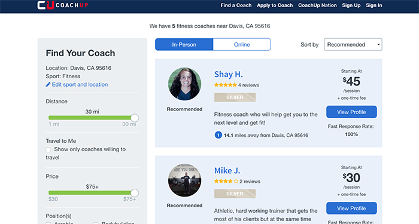
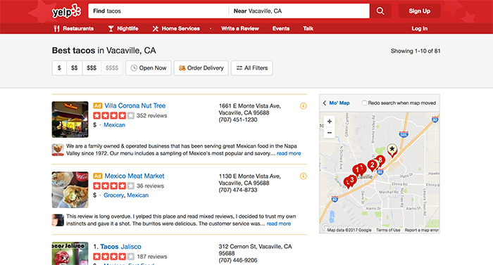

Comparative Research
I found a website called CoachUp which helps atheltes find coaches for their sports. The website allows users to either find a coach or to look for clients which I thought that I could add to my idea of creating an app or website to find health/
fitness coaches. I like the interface of this website because it simple and straight to the point. Its simple user interface of first asking the user if they are looking for a coach or becoming a coach is simple for users to understand. I also liked
how the website provides two options after: in person sessions or online sessions which I find useful for my idea beacuse now a days, a lot of clients may prefer online coaching over in person. The website allowed filters which was easy for users
to locate and refine their search. The only thing I did not like was how a little box would pop up all the time and ask for my email to register to the webiste.

Even though Yelp has nothing to do with my topic of choice, I find the concept of Yelp can greatly contriute to my topic. One interface I enjoy about Yelp is the map on the side and how it tells the users' current location and where the restaurants are in reference to the user's location. One issue I find confusing is how they put two restaurants that are ads before the list of suggested restaurants. I think this is confusing for the user because the user will not know that the restaurants posted are just ads until they find out the location of the restaurnat is not part of the list. Another interaction I find helpful is how everytime the user hovers over the restaurant, the location number on the map lights up which is easier for the user to see since sometimes the location nubmers on the map is all clumped up.
